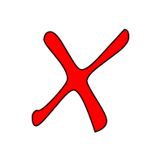

beforework BDD
Du concrets!
Notre première “Story”
Qui est concerné?
Pourquoi êtes-vous venu?
Quelles sont vos attentes?
Quelles seraient les critères d'acceptances?
Les scénarios
Notre premier “Scénario”
Scenario: Commençons par la fin et montrez-nous des résultat!

Le S.I.!
Un rapport de résultat!
Scenario: Nous sommes impatients (Commençons par la fin et) montrez-nous des résultat!
Etant donné un SI très complexe
Et une mise en application chez un client
Quand on observe les résultats
Alors on se dit qu'en y allant petit à petit c'est possible
Scenario: A quoi ressemble un scénario!
Etant donné un SI très complexe
Et une mise en application chez un client
Quand on regarde les scénarios
Alors on voit qu'il est possible de tester des cas nominaux
Et on voit qu'il est possible de tester des cas d'erreurs
Notre première “Story”
En tant que participants à cette présentation
Afin de ressentir les bénéfices de l'approche BDD
Je veux que des cas concrets soient présentés
A nous d'écrire les suivantes!
Vertical Slides
Slides can be nested inside of other slides,
try pressing down.
Basement Level 1
Press down or up to navigate.
Basement Level 2
Cornify

Basement Level 3
That's it, time to go back up.
Holistic Overview
Press ESC to enter the slide overview!
Works in Mobile Safari
Try it out! You can swipe through the slides pinch your way to the overview.
Transition Styles
You can select from different transitions, like:
Marvelous Unordered List
- No order here
- Or here
- Or here
- Or here
Fantastic Ordered List
- One is smaller than...
- Two is smaller than...
- Three!
Global State
Set data-state="something" on a slide and "something"
will be added as a class to the document element when the slide is open. This let's you
apply broader style changes, like switching the background.
"blackout"
"soothe"
Custom Events
Additionally custom events can be triggered on a per slide basis by binding to the data-state name.
Reveal.addEventListener( 'customevent', function() {
alert( '"customevent" has fired' );
} );
Clever Quotes
These guys come in two forms, inline:
The nice thing about standards is that there are so many to choose from
and block:
For years there has been a theory that millions of monkeys typing at random on millions of typewriters would reproduce the entire works of Shakespeare. The Internet has proven this theory to be untrue.
Pretty Code
var supports3DTransforms = document.body.style['webkitPerspective'] !== undefined ||
document.body.style['MozPerspective'] !== undefined ||
document.body.style['perspective'] !== undefined;
function linkify( selector ) {
if( supports3DTransforms ) {
var nodes = document.querySelectorAll( selector );
for( var i = 0, len = nodes.length; i < len; i++ ) {
var node = nodes[i];
if( !node.className || !node.className.match( /roll/g ) ) {
node.className += ' roll';
node.innerHTML = '' + node.innerHTML + '';
}
};
}
}
linkify( 'a' );
Courtesy of highlight.js.
Intergalactic Interconnections
You can link between slides internally,
like this.
Fragmented Views
Hit the next arrow...
... to step through ...
any type- of view
- fragments
Spectacular image!